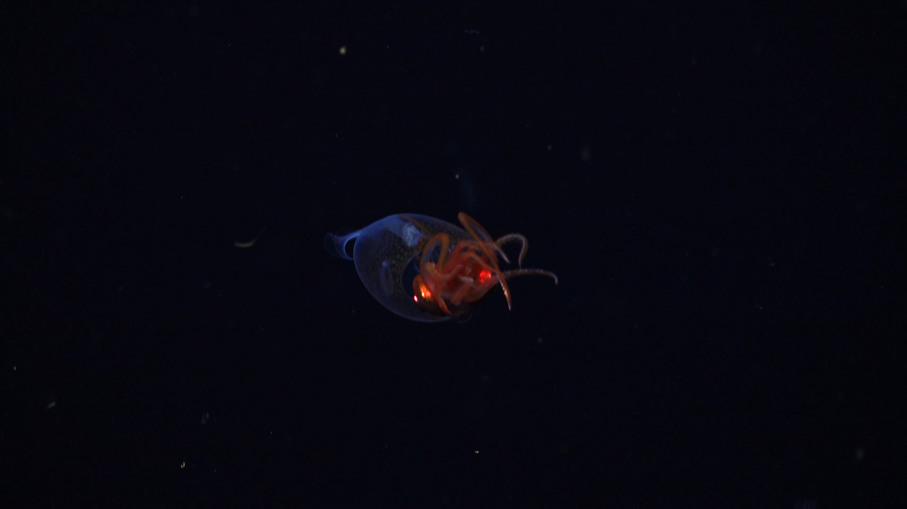

Searching for New Species in the South Sandwich Islands
An Ocean Census and GoSouth Expedition
The Expedition
After 8 days of sailing on R/V Falkor (too) from Punta Arenas, an Antarctic gateway city, we arrived one of the most remote places on this planet - the South Sandwich Islands. The South American plate meets South Sandwich plate where the former subducts beneath the latter, which creates large mosaic of tectonic movements and provides various habitat for benthic animals.
This 33-days expedition was produced by Ocean Census and GoSouth in collaboration with Schmidt Ocean Institute. Ocean Census is the largest global mission ever launched to accelerate marine life discovery and represents the major goal of this cruise - to find undescribed species new to science in this remote area. GoSouth is a collaboration from University of Plymouth, GEOMAR, and the British Antarctic Survey, who focuses on the geological hazard at the area. We cooperated with Schmidt Ocean Institute to perform visual and multibeam echosounding survey onboard Falkor (too) and sending ROV SuBastian down to 3823 m deep, which also collected biological and geological samples for subsequent studies.
{kind=link}
Learn more
Resources
Tools
Press Release
Carnivorous “death-ball” sponge among 30 new deep-sea species from the Southern Ocean October 29, 2025 | Ocean Census
Discovering the hidden biodiversity of the Southern Ocean August 4, 2025 | Ocean Census
A conversation with Dr. Michelle Taylor, Ocean Census head of science July 18, 2025 | Ocean Census
New coral gardens and hydrothermal vents found in the icy depths of the remote South Sandwich Islands May 29, 2025 | Ocean Census
First Confirmed Footage of a Colossal Squid—and it’s a Baby! April 15, 2025 | Schmidt Ocean Institute
First Footage of Live Juvenile Colossal Squid – filmed on the Ocean Census expedition to the South Sandwich Islands April 15, 2025 | Ocean Census
Fire and Ice: Why Explore the Antarctic Waters Around the South Sandwich Islands? February 25, 2025 | Ocean Census
Social Media